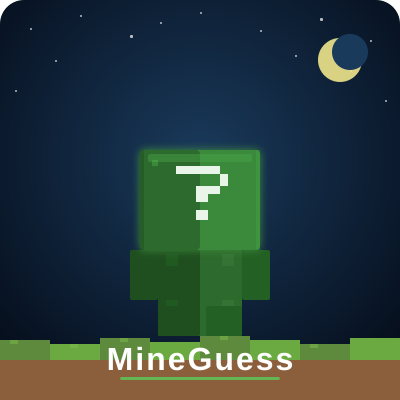

Mine
Guess
Teste dein Minecraft-Wissen!
225+ Fragen · Endlos- & Wettkampfmodus
⏱ 40 Sek./Frage
💡 Tipps & Fun Facts
🏆 Leaderboard
🎮 Multiplayer
▶ Spielen
v2.0 · MineGuess
Mine
Guess
Melde dich an, um Statistiken zu speichern,
Punkte zu sammeln und im Leaderboard aufzutauchen.
Mit Google anmelden
oder
Als Gast spielen (keine Statistiken)
Deine Daten werden sicher in der Cloud gespeichert.
Gäste haben keinen Leaderboard-Zugang.
Wähle einen Modus
Was möchtest du spielen?
🔄
Endlosmodus
225+ Fragen ohne Ende. Übe und verbessere dein Wissen.
FÜR ALLE
🏆
Wettkampf
10 Fragen täglich. Punkte sammeln und im Leaderboard aufsteigen.
NUR ACCOUNTS
🎮
Multiplayer
BETA
Spiele gegen andere Spieler in Echtzeit. Öffentliche oder private Räume.
ECHTZEIT
🏆 Leaderboard
↩ Abmelden
↻
✕ Schließen
🏆 Leaderboard
Heute
Allzeit
Lade…
🏁 Wettkampf abgeschlossen!
0
PUNKTE
0
RICHTIG
10
FRAGEN
0%
QUOTE
Punkte werden ins Leaderboard eingetragen…
🏆 Leaderboard
🏠 Neu starten
⛏
Mine
Guess
0
STREAK
0
BEST
0
GESPIELT
🏆
▾
1
FRAGE
10
GESAMT
0
PUNKTE
0
RICHTIG
0
GESPIELT
0
PUNKTE
#1
FRAGE
Kategorie
Lade Frage…
10
💡 Tipp 1
(-200 Pkt.)
💡 Fun Fact
📋 Ergebnis teilen